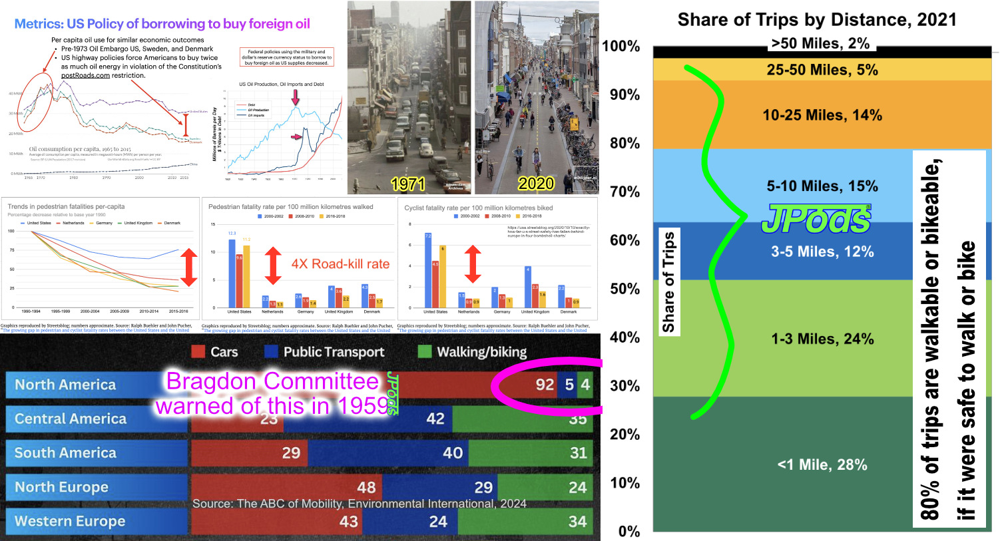

In 1971, the Dutch launched "Stop de Kindermoord" — Stop Child Murder — after car-centric highway policies killed too many children. The Netherlands changed. America didn't.
Before the 1973 Oil Embargo, the U.S., Sweden, and Denmark had nearly identical per-capita oil use and roadkill rates. All three nations had the same car-centric transport policies. After 1973, Sweden and Denmark changed course. The U.S. doubled down.

After 1973, they invested in walking, biking, and transit infrastructure. Per-person oil consumption dropped 60%. Pedestrian and cyclist fatality rates dropped to one-quarter of U.S. rates. Their economies grew. Their cities became more livable. They proved the alternative works.
Borrowed trillions to buy foreign oil. Fought oil wars in Iraq and Afghanistan ($6.4 trillion, Brown University). Built more highways. Killed 40,000+ people per year on roads. North America: 92% car, 5% public transport, 4% walking/biking. The Bragdon Committee warned of exactly this outcome in 1959.
80% of all trips in America are under 10 miles — distances that are walkable or bikeable if the infrastructure were safe. JPods provides the Middle Mile that makes walking and biking the natural choice for the last mile. About 1 mile of JPods guideways per 14 miles of roads.
Every city has a crash map. Every crash map tells the same story — the same corridors, the same intersections, the same predictable violence. The data designs the network. Crash corridors become guideway corridors. Walk circles become station placement.
Open MeshMobility. Find your city. Turn on crash overlays. See where people are dying.
Place stations. Connect guideways. The crash corridors tell you where. 135 stations covers a city like Columbia, SC.
Open Personalize Transit. Enter your city. Get the investment cost, annual savings, and CO² reduction.
Send the email below with your city's data. The crash map is the indictment. The network is the solution. The math is the proof.
Copy this template. Replace the highlighted fields with your city's data from MeshMobility and Personalize Transit. Attach your crash map and network design screenshots. Send it to your mayor and city council.
This is not a proposal. It is a demonstrated technology with 54 years of operational history and zero fatalities.
Opened by President Nixon's daughter. "More fun than Disneyland." 150 million+ trips. Zero injuries. Grade-separated. Self-driving since 1972 — decades before Tesla. Congressional study confirmed it works. Government "institutional failures" blocked deployment for "four to six decades."
Privately funded networks 5× more efficient than roads, for 5% of gross revenues as rights-of-way. No taxpayer money. No bonds. No government debt. The city provides the right-of-way over existing roads. JPods provides the capital, builds the network, and operates it. Revenue from fares and energy pays for everything.
• 60-80% reduction in roadkills
• Mobility without a car — 24/7, any age, any ability
• Parking lots converted to taxable productive land
• Reduced road maintenance costs
• Solar energy surplus powering the neighborhood
• No taxpayer cost
• "People are dying on predictable corridors. Here is the map."
• "A proven technology exists. It has worked since 1972."
• "A private company will fund the entire network."
• "The only thing you need to provide is the right-of-way."
• "Sweden and Denmark proved this works at a national scale."
• "Why are we still killing people?"
Use the tools. Map the crashes. Design the network. Run the numbers. Send the email. The data does the confronting.